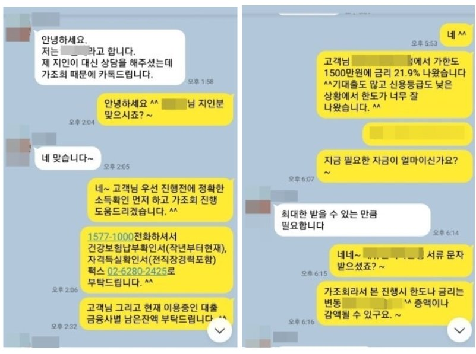

저신용 기대출 과다 직장인 추가자금 1500만원 승인사례 !
안녕하세요~ 오늘은 제가 상담드린 조**고객님의 대출 사례를 안내해 드리겠습니다.
조** 고객님께서는 4대보험이 가입된 직장인 이셨으며, 월소득은 200만원 정도 되셨습니다.
기대출은 SBI저축 1000만원, NH저축 1000만원, 친애저축 1500만원, 대부500 만원, 학자금대출(4건)
500만원 사용중이셨습니다. 지속적인 대출 증가로 신용등급이 많이 떨어져 진행이 쉽지
않았지만 저는 추가대출 가능성이 있다고 판단되어 고객님 조건에 맞는 금융사로 안내해
드렸고 한 금융사에서 1500만원 승인 받아 고객님께서도 만족해 하셨습니다.
아래는 저와 조**고객님의 카톡상담 내용 일부를 캡쳐한것이오니, 참고하시어 많은 도움
되셨으면 좋겠습니다. 감사합니다. ^^
